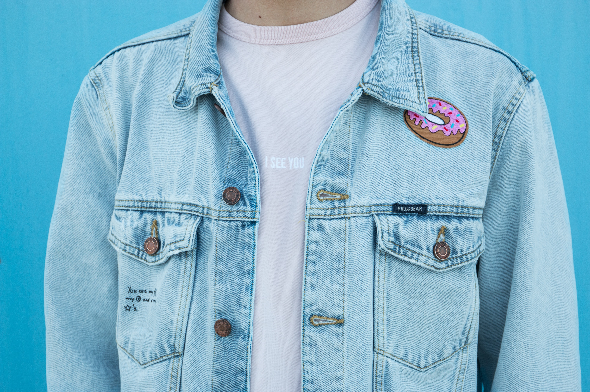
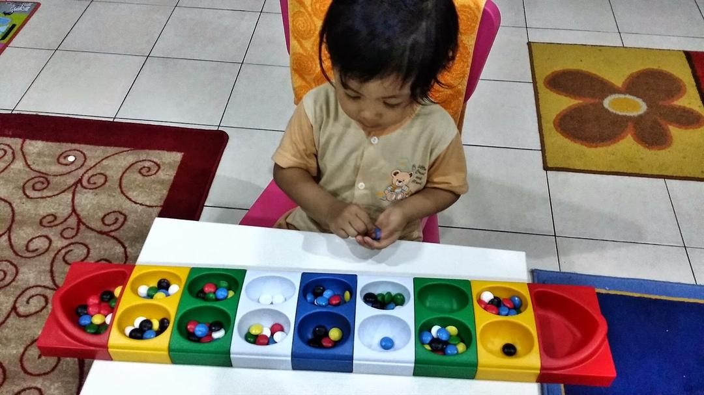
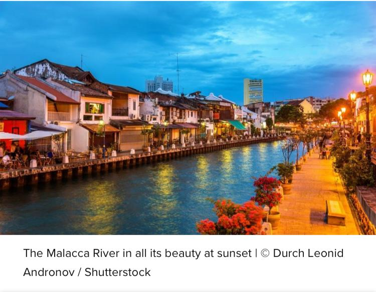
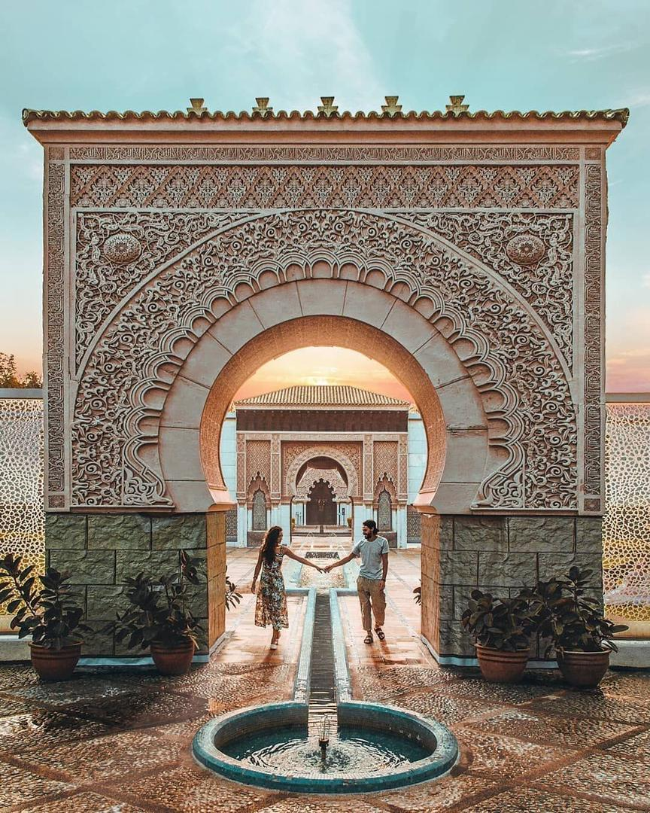

GALLERY

Batu Seremban
The modern pattern of ‘batu seremban

Fashion
Example of fashion style

Nasi Dagang
Delicious local food

Congkak
The modern design of congkak and it’s made specifically for children
Food
The variety of Malaysian food

Malaysia
"Malaysia has a lot of historical and interesting place to visit"
Langkawi
This is one of the interesting places in Langkawi known as Tasik Dayang Bunting

Bukit Tinggi
Bukit Tinggi has the environment that is rare to be found in Malaysia. This place also known as French Village Malaysia

Morocco
Moroccan Pavilion is a place in Putrajaya where the visitors can feel like having a vacation in Morocco.